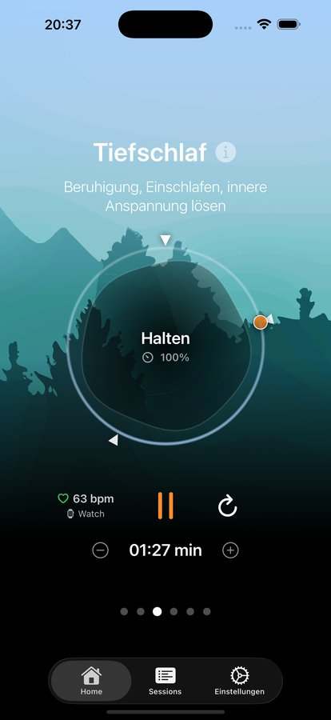
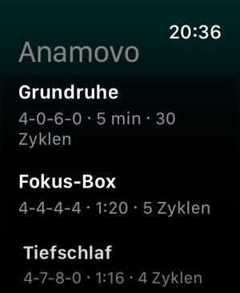
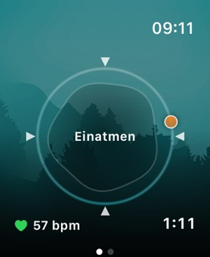
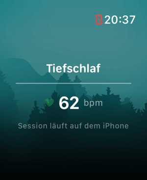

No account
Anamovo opens straight into practice — no sign-up, no login.
For iPhone · iPad · Apple Watch
Anamovo guides you through breathing and relaxation exercises, reads your heart rate through Apple Watch or AirPods Pro 3 if you choose — and stays entirely on your device.
Follow the dot for one full round — the same 4-4-4-4 second pace the app uses for “Focus Box”.
Exercises
Start with carefully designed exercises like “Ground Calm” or “Focus Box” (4-4-4-4 box breathing), or build your own breathing rhythm, duration and cycles at your own pace.

Heart rate
Connect your Apple Watch or AirPods Pro 3, and Anamovo shows your heart rate during the exercise — a gentle signal, not a performance metric.

Apple Watch
Exercises sync automatically to your Apple Watch — start them right there, no iPhone nearby needed. The session then syncs back into your iPhone's calendar afterward.



Color themes
Choose from several color themes that change the sky behind the app — and the background music along with it. Try it right here:
Sky

Reminders & history
Get a gentle nudge to practice, and see in the calendar when you took the time — every session is stored locally with its data.


Privacy
Anamovo opens straight into practice — no sign-up, no login.
Exercises, heart-rate data and history never leave your device.
No analytics, no ad identifiers, no data shared with third parties.
One experience, three devices